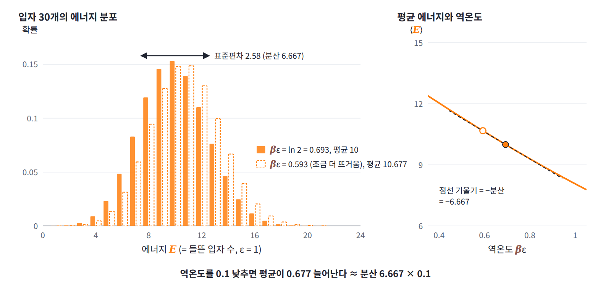

요동-응답 관계: 흔들리는 만큼 반응한다
온도를 바꾸는 실험과 온도를 고정한 채 에너지가 흔들리는 모습을 지켜보는 관찰은 전혀 다른 일이다. 그런데 앞의 표에서 두 일은 입자 수와 상관없이 같은 숫자를 내놓았다. 이것이 늘 성립한다면, 열용량을 알려고 반드시 온도를 바꾸는 실험을 해야 할까?
역사: 흔들림에서 읽어 낸 것
평균만 보던 통계역학이 흔들림에 눈을 돌린 것은 20세기 초의 일이다. 흔들림은 처음에 평균 이론이 맞는지 확인하는 부산물로 계산되었지만, 곧 평균으로는 보이지 않는 것을 드러내는 도구가 되었다. 1904년 베른 특허청의 심사관이던 아인슈타인은 『물리학 연보』에 낸 논문에서, 열원과 에너지를 주고받는 계의 에너지 흔들림을 제곱해 평균한 값이 kT² × (평균 에너지의 온도 미분)과 같다는 식을 얻었다. 깁스가 2년 전 『통계역학의 기본 원리』에서 같은 식을 이미 적어 두었지만 아인슈타인은 그것을 모른 채 따로 도달했다. 그는 이 식에 들어 있는 보편 상수 k가 에너지 흔들림의 크기를 정한다는 점에 주목했고, 흑체 복사(뜨거운 물체가 온도만으로 정해지는 빛을 내는 것)에 이 식을 과감하게 적용했다. 한 변이 파장 정도인 공간에서는 복사 에너지의 흔들림이 에너지 자체만큼 크리라고 가정하고 계산하니, 온도에 따라 가장 밝게 나오는 빛의 파장이 옮겨 가는 빈의 변위 법칙과 거의 맞는 값이 나왔다.
5년 뒤 아인슈타인은 같은 발상을 더 밀고 나갔다. 이번에는 실험과 잘 맞는 플랑크의 복사 법칙을 흔들림 공식에 넣었는데, 에너지 흔들림이 두 항의 합으로 나왔다. 한 항은 빛을 파동으로 보고 여러 파동이 간섭해 생기는 흔들림으로 설명할 수 있었고, 다른 항은 빛이 에너지 덩어리로 공간에 흩어져 있다고 보아야만 설명할 수 있었다. 1909년 9월 잘츠부르크에서 열린 학회에서 그는 이 결과를 발표하며 빛에는 파동의 성질과 입자의 성질이 함께 있다는 생각을 제안했다. 평균 에너지만 보았다면 보이지 않았을 빛의 입자성이 흔들림에서 드러난 것이다.
같은 2차 미분의 두 얼굴
요동을 적은 식을 다시 보자. 가운데 항이 이 표의 마지막 칸이고, 오른쪽 항이 분산 칸이다. 역온도를 조금 바꿨을 때 평균 에너지가 움직이는 비율과 에너지의 분산은 ln Z의 같은 2차 미분을 두 가지로 읽은 것이므로, 입자 수와 상관없이 정확히 같다. 표에서 0.2%쯤 어긋난 것은 역온도를 0.01이라는 유한한 폭으로 바꿔 기울기를 어림했기 때문이다.

이제 온도로 돌아가자. ln Z를 두 번 미분한 식은 역온도에 대한 평균 에너지의 응답이 에너지의 분산, 곧 요동과 같다고 말한다. 역온도와 온도는 β = 1/kT로 이어져 있어서 dβ/dT = −1/(kT²)이므로, 그 결과에 이 비율을 곱하면 다음을 얻는다.
첫 식을 요동-응답 관계 (흔들림의 크기가 응답을 정한다, fluctuation-response relation)라 부른다. 왼쪽은 온도를 바꾸는 실험을 해야 알 수 있는 양이고, 오른쪽은 온도를 고정한 채 에너지가 흔들리는 모습만 지켜보면 알 수 있는 양이다. 계가 조건의 변화에 반응할 수 있는 길과 저절로 흔들리는 길이 같은 길이라서 둘이 같아진다. 둘째 식은 앞에서 dE = T dS로 얻은, 엔트로피로 적은 열용량 C = ∂S/∂ln T다.
이 식에서 곧바로 두 가지를 읽을 수 있다. 첫째, 분산은 음수가 될 수 없으므로 ln Z는 β의 볼록 함수이고, 평균 에너지는 β가 커질수록, 곧 온도가 내려갈수록 줄어든다. 온도를 올렸는데 평균 에너지가 줄어드는 계는 평형에서 있을 수 없다는 뜻이다. ln Z와 엔트로피를 르장드르 변환으로 오갈 수 있는 것도 ln Z가 볼록하기 때문인데, 그 볼록성의 정체가 에너지의 흔들림이었던 셈이다. 둘째, 에너지 분산이 0이 되는 것은 모든 상태가 같은 에너지를 가질 때뿐이고, 그때는 ln Z가 β에 대해 곧은 선이 되어 온도를 바꿔도 평균 에너지가 전혀 움직이지 않는다. 흔들리지 않는 양은 조건을 바꿔도 반응하지 않는다.
2준위 입자에 적용하기
2준위 입자에 적용해 보자. βε = ln 2에서 입자 하나의 에너지 분산은 (1/3)(2/3)ε² = 0.222ε²이고 kT = ε/ln 2이므로, 요동-응답 관계로 얻은 열용량은 0.222 × (ln 2)²k = 0.107k다. 평균 에너지를 온도로 직접 미분해 얻은 값과 같다. 온도를 바꿔 가며 이 값이 어떻게 달라지는지는 문제 1에서 계산해 본다.
문제 1. 두 상태짜리 입자의 열용량
선생님의 수업. 김민준(학부 3학년, ML 강의 몇 개 수강)과 이서연(수학과 3학년)이 문제를 풀고, 선생님이 틀린 곳을 짚는다.
에너지 0과 ε 두 상태만 가질 수 있는 입자 하나의 열용량 C를 βε의 함수로 구하고, βε = 10, 5, ln 2, 0.1에서 값을 계산하라. 열용량은 어느 온도에서 가장 큰가?

온도를 올릴수록 들뜨는 입자가 늘어나니까 열용량도 계속 커지겠죠. 계산해 볼게요. 들떠 있을 확률이 p = 1/(1 + e^(βε))이고 분산은 p(1 − p)ε²이니까, kT²으로 나누면 C/k = (βε)² p(1 − p)예요. βε = 10이면 0.0045, 5면 0.166, ln 2면 0.107, 0.1이면… 0.0025요? 뜨거워지니까 다시 작아졌어요.

이상한데. 분산 p(1 − p)ε²은 p가 1/2에 가까울수록 커지잖아. βε = 0.1이면 p = 0.475라서 분산이 0.249ε²로 네 경우 중에 제일 커. 요동이 제일 큰데 응답이 제일 작다고?

분산을 무엇으로 나눴는지 보세요.

아, kT²이요. 온도가 높을 때는 분산이 조금 커지는 것보다 T²이 훨씬 빨리 커지니까요. 그런데 식을 떠나서 왜 그런지 말로 하고 싶어요.

온도를 무한히 올리면 평균 에너지는 어디까지 가죠?

p가 1/2을 못 넘으니까 ε/2에서 막혀요. 아, 이미 거의 막힌 곳에서는 온도를 더 올려도 평균 에너지가 늘 데가 없네요. 반대로 βε = 10처럼 차가우면 덩어리 ε가 kT보다 너무 커서 거의 아무도 못 들뜨고요.

그래서 열용량은 그 사이에 봉우리가 있어요. 계산해 보면 βε ≈ 2.4, 곧 kT ≈ 0.42ε에서 C ≈ 0.44k로 가장 커요. 에너지 준위가 몇 개로 제한된 물질의 열용량에서 실제로 관찰되는 봉우리이고, 쇼트키 봉우리(Schottky anomaly, 예상에서 벗어난 봉우리라는 뜻)라 불러요. 봉우리의 위치를 재면 거꾸로 준위 사이의 간격 ε를 알아낼 수 있어요.

그럼 LLM 샘플링에서 temperature를 조금 바꿀 때 엔트로피가 얼마나 변하는지도 이걸로 알 수 있어요? 온도에 가장 잘 반응하는 구간이 있을 것 같은데요.
열용량은 엔트로피가 로그 온도에 반응하는 정도라고 했죠. 온도 τ의 softmax에 옮기면 ∂H/∂ln τ = Var_p(z)/τ², 곧 모델이 뽑은 토큰의 로짓 분산을 τ²으로 나눈 값이에요. 로짓 (2, 1, 0)으로 해 봐요.

τ = 1에서 로짓 분산이 0.424라서 0.424, τ = 0.5에서는 0.159/0.25 = 0.634, τ = 2에서는 0.590/4 = 0.148이에요. τ를 촘촘하게 바꿔 가며 돌려 보니 τ = 0.53 근처에서 0.637로 가장 커요. 이 로짓에서는 그 근처에서 temperature 값이 제일 잘 먹히네요.

온도를 아주 낮추면 argmax 하나에 몰려서 반응이 없고, 아주 높이면 이미 고르게 퍼져서 반응이 없는 거네. 두 상태짜리 입자랑 똑같은 모양이야.